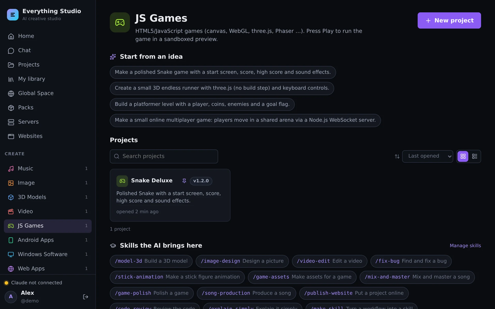

Requirements#
| What | Needed |
|---|---|
| Docker | Docker Desktop (Windows, macOS) or Docker Engine (Linux) with Compose v2. The public-server setup needs Compose v2.24 or newer. |
| Processor | x86-64 (amd64). The published image is built for that architecture. |
| Memory | 4 GB for the container at least — 8 GB or more when several people work, or for Android and .NET builds. On Docker Desktop raise the limit under Settings → Resources. |
| Disk | About 15 GB: the image is roughly 8 GB, the rest is your projects, the Android SDK and room to build. |
| Internet | At the first start the Studio downloads Claude Code (about 300 MB). WordPress and the Android SDK are downloaded when you set them up. |
| Browser | A current Chrome, Edge, Firefox or Safari. MIDI keyboards in the DAW need Web MIDI (Chrome, Edge, Firefox) and HTTPS or localhost. |
| An AI account | Each person uses their own: a Claude subscription (Pro, Max, Team) or an Anthropic API key — or an account of another AI the admin switched on. |
Quick start#
The whole Studio is one container. With Docker Compose:
git clone https://github.com/bugfishtm/ai-everything.git
cd ai-everything
docker compose up -dCompose takes the image bugfishtm/ai-everything from Docker Hub. No .env file is needed —
copy .env.example to .env only when you want to change a port or a limit
(Configuration).
Then open http://localhost:8080. The first account you create becomes the administrator.
The first start takes a minute or two: the database is created and Claude Code is downloaded from npm. Follow it with docker compose logs -f studio — the Studio is ready when it prints listening on http://0.0.0.0:8080.
Without Compose#
The same image runs with plain Docker:
docker run -d --name ai-everything \
-p 127.0.0.1:8080:8080 -p 127.0.0.1:8081:8081 -p 127.0.0.1:8443:8443 \
--shm-size=1g --restart unless-stopped \
-v studio-data:/data -v studio-db:/var/lib/mysql \
bugfishtm/ai-everything:latestSettings are passed with -e NAME=value. --shm-size=1g is for the headless browser the AI uses to look at its own work.
Build it from the source#
To build the image yourself — with your changes, or without toolchains you do not need:
docker compose up -d --buildThe first build takes 10–30 minutes. Switches in .env leave parts out:
INSTALL_DOTNET, INSTALL_WINDOWS_CROSS, INSTALL_ANDROID, INSTALL_BROWSERS,
INSTALL_WORDPRESS, INSTALL_WINE. The default build never contains Claude Code — see
what is not in the image.
First steps#
- Create the first account on the login page — it is the administrator. (Opened from another network, the form asks for a setup code from the server log; see the first account.)
- Connect your AI under Account & AI:
- Sign in to Claude Code — Claude Code's own sign-in runs in a terminal in your browser; you approve it on Anthropic's site. The login stays in your private account on the server.
- or paste an API key from the Anthropic Console (stored encrypted).
- Pick an area on the home page, click New project and describe what you want — or start from one of the ideas.

Optional, for administrators:
- Admin → AI providers — switch on OpenAI Codex, Google Gemini, OpenCode or your own ACP agent. They are downloaded when you switch them on.
- Admin → Android SDK — install it (you accept Google's license there) to build Android apps.
- Admin → Users — add people. Registration is closed by default.
Where your data lives#
| Volume | In the container | Holds |
|---|---|---|
studio-data | /data | Projects (each one a git repository), the asset library, packs, every user's home with their AI login, published websites, WordPress runtimes, downloaded SDKs, generated secrets |
studio-db | /var/lib/mysql | The built-in database (MariaDB): accounts, projects, chats, usage — and one database per WordPress site |
The volumes survive rebuilds, updates and docker compose down. Only docker compose down -v deletes them.
The database runs inside the container and has no network port. docker compose exec studio studio-db status|list|shell|dump manages it.
To use your own MySQL or MariaDB server instead, set MYSQL_HOST and its companions.
Updating#
docker compose pull
docker compose up -dgit pull
./scripts/update.sh # Windows: .\scripts\update.ps1
./scripts/update.sh --full # also newer base image and OS packagesThe database is upgraded by itself at the next start. Claude Code keeps itself current
(CLAUDE_CODE_VERSION=latest, checked at start and daily); Admin → Claude Code shows the version.
Make a backup before an update. A newer Studio upgrades the database; going back to an older image afterwards needs the backup.
Backup and restore#
./scripts/backup.sh # → backups/<date>/studio-db.sql.gz + studio-data.tar.gz
./scripts/backup.sh --no-sdk # without the Android SDK (it can be downloaded again)The database dump includes the databases of all WordPress sites.
docker compose up --no-start
docker run --rm -v ai-everything_studio-data:/data -v "$PWD/backups/<date>":/b alpine \
tar xzf /b/studio-data.tar.gz -C /data
gunzip -c backups/<date>/studio-db.sql.gz | docker compose run --rm -T studio studio-db import
docker compose up -dStored API keys and certificate keys are encrypted with the app secret. It is in the data volume (home/.studio/app-secret) and so part of the backup — or set your own APP_SECRET and keep it somewhere safe.
Removing it#
docker compose down # stops it; projects and accounts stay in the volumes
docker compose down -v # also deletes the volumes — everything is goneIf something does not work#
| What you see | What to do |
|---|---|
| The page does not open | docker compose ps must show the container as healthy; docker compose logs studio says why not. curl http://localhost:8080/api/health answers {"ok":true} when it runs. |
| Port 8080 is taken | Set STUDIO_PORT (and SITES_PORT, SITES_HTTPS_PORT for 8081 and 8443) in .env. |
| “Claude Code is not installed” | The download needs internet access to npm. Admin → Claude Code → Install tries again. |
| The container restarts while building or installing | Docker Desktop's memory limit is too low. Give it 6–8 GB. |
A website address like name.localhost:8081 does not open | These addresses work in the browser on the computer that runs the Studio. For other devices use a domain — see Server & HTTPS. |
| The login form asks for a setup code | You are opening a Studio without accounts from another network. The code is in the log: docker compose logs studio | grep "setup code". |